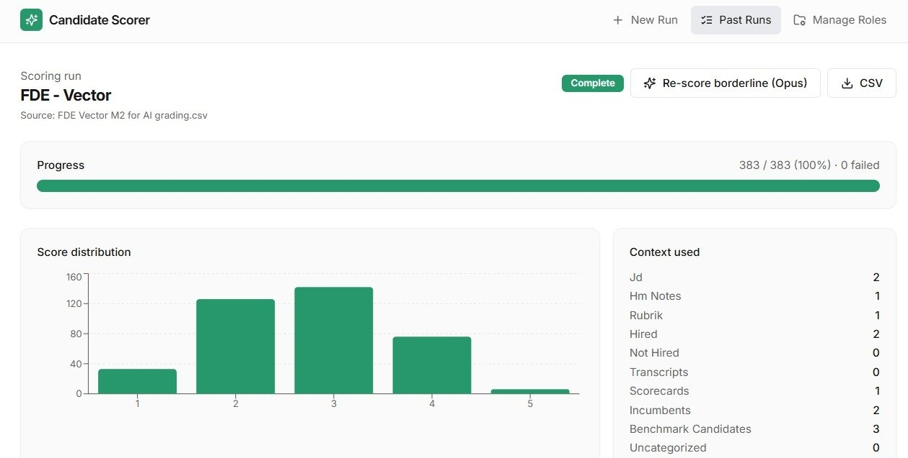
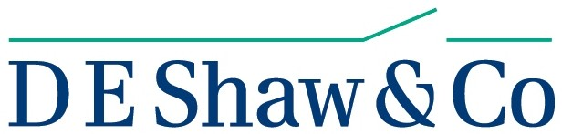
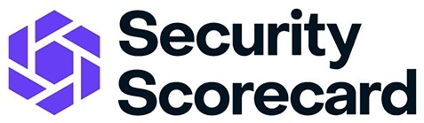
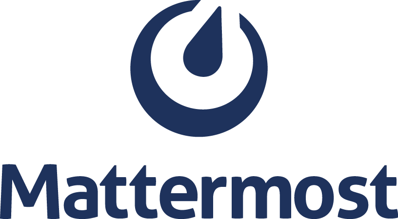
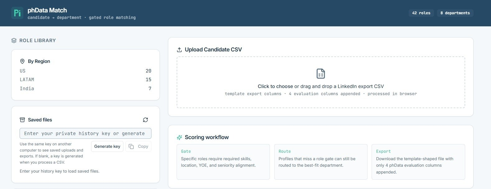
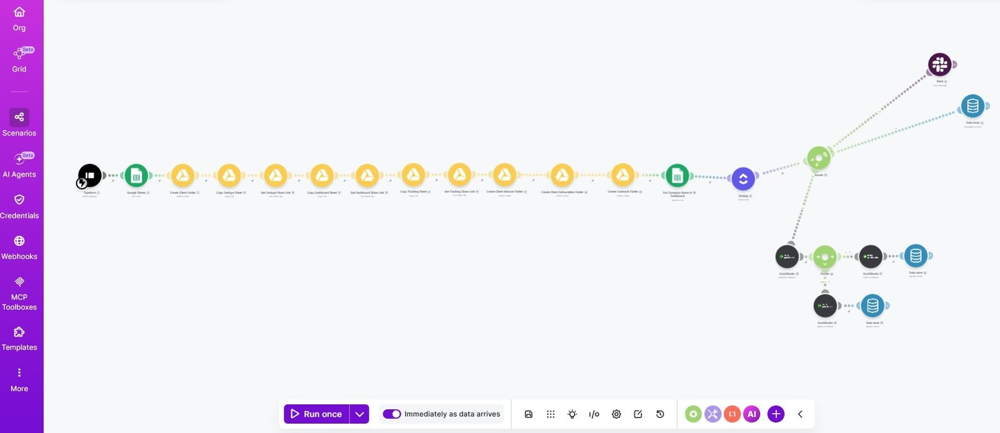
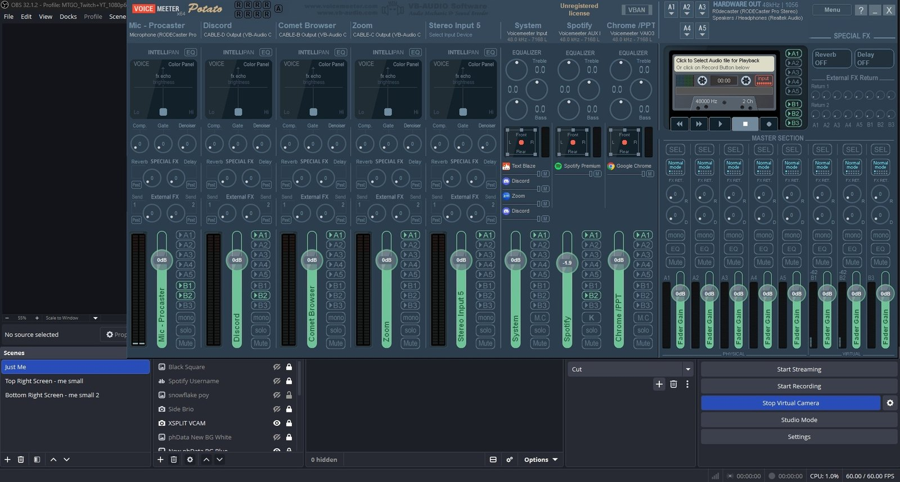
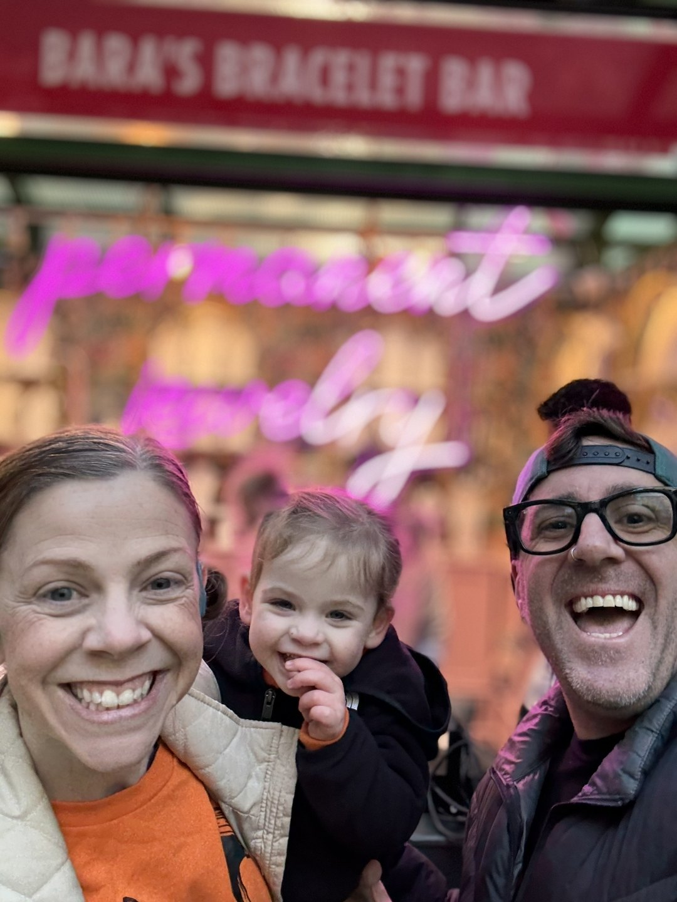
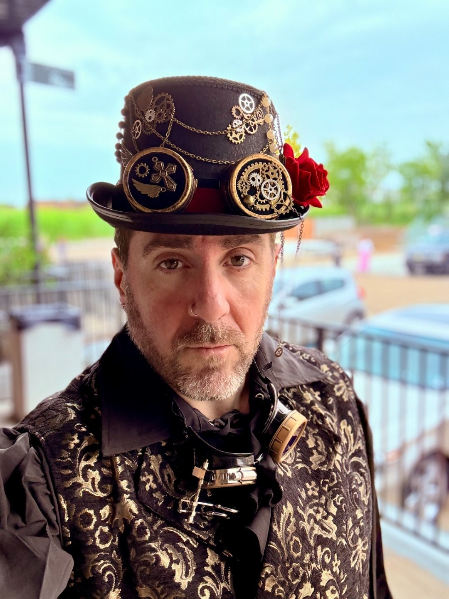

Bridgewater
BridgewaterHello there · Talent acquisition · AI sourcing systems
I build AI that makes recruiting faster.
I’m Mike “Batman” Cohen — a sourcer and recruiter with ~19 years in TA, founder of Wayne Technologies, and a Claude Certified builder of the AI tools recruiting teams actually use.
Claude Certified
Claude Certified Associate – Foundations · Anthropic
Recruiter first. Builder second.
Every tool here came from a real req: fewer hours screening profiles, recovered candidate data, cleaner ATS and CRM handoffs, tighter calibration with hiring managers, and sourcing workflows that scale past one recruiter holding everything together.



TA & sourcing leader
AI recruiting builder
Claude Certified
HR tech advisor
Trusted environments
Notable clients and advisory companies
I’ve sourced and recruited for high-expectation hiring teams — and I advise, and hold equity in, the HR tech platforms recruiters use every day.
Notable clients
Bridgewater
D. E. Shaw PwC
PwC Uber
Uber Ross Stores
Ross Stores GameStop
GameStop Waste Management
Waste Management The New York Times
The New York Times
SecurityScorecard Redis Labs
Redis Labs
MattermostAdvisory companies
 SourceWhale
SourceWhale SeekOut
SeekOut Clay
Clay HoneIt
HoneIt Pin
Pin Sense
Sense Chatterworks
ChatterworksSelected work
AI recruiting systems I’ve built
Each project started with a real talent acquisition bottleneck: manual profile review, broken candidate data, repetitive search setup, or sourcing tools that didn’t talk to each other.
Build receipts
Code links included below for the featured builds
AI candidate screening
Candidate Scorer
Built a cloud-based AI application that screens candidate profiles against role-specific hiring criteria, calibrates from user feedback, and keeps each role self-contained while following the same repeatable workflow.
- Objective
- Automate the manual recruiter work of checking every profile returned in a sourcing search.
- Method
- CSV and Google Drive inputs, rubric-based scoring, calibration feedback, and role-specific artifacts.
- Result
- About 30 minutes of setup per role, automating roughly 80% of profile assessment and saving 3.5–6.5 hours per role.
- Tools
- Google Sheets, Clay, Google Apps Script, Perplexity Computer.


AI sourcing review app
Machine Learning Sourcing Automation App
Built a SQLite-backed candidate sourcing review surface for a Machine Learning Solutions Architect search, turning sourced profiles into a reviewer-friendly app with scoring logic, filters, calibration, and candidate detail review.
Outcome: recurring Brazil and US sourcing batches flow into a persistent review UI with ratings, feedback themes, review states, workflow settings, and reviewer notes.
Express · SQLite · vanilla JavaScript · Python pipeline · candidate scoring · sourcing review UI

Candidate-to-role matching
Candidate-to-department matching
Built a recruiter-operator tool that takes LinkedIn-style candidate CSVs, checks them against an embedded role library, and routes each profile to the best-fit department and role.
Outcome: template-ready CSV exports with confidence, rationale, department fit, and role fit appended to every candidate row.
TypeScript · React · Express · deterministic matcher · CSV export
Sourcing data workflows
Sourcing data automations
Created advanced Sheets, REGEX, Query, LLM, and Apps Script workflows to gather profile data, normalize ingestion across platforms, maintain hygiene, and automate ETL steps.
Outcome: one of the most detailed and efficient sourcing data workflows I’ve built.
Google Sheets · Llama LLM via Poe · Apps Script · Quickli

Recruiting CRM recovery
Recruiting CRM data recovery
Built AI agents to recover roughly 6,000 candidate profiles, outreach campaign history, metrics, and CRM mappings after a sourcing-platform migration caused critical data loss.
Outcome: profiles, messaging history, campaign metrics, and user-level data access restored.
SourceWhale · Google Sheets · Apps Script · Claude Code · Perplexity Computer

Recruiting operations
Recruiting ops automation
Designed low-code automations for recruiting client onboarding: intake forms, job description parsing, search template creation, tracking setup, messaging, timelines, deliverables, and assignments.
Outcome: automated client onboarding and removed recurring operations-manager / assistant workload.
Typeform · Make · Google Sheets · ClickUp · Discord

Side build · technical ops
Streaming technology automation
Evaluated, implemented, and streamlined a creator-grade streaming setup across OBS, routing, scenes, capture devices, audio paths, and repeatable live-production workflows.
Outcome: repeatable live-production workflow across scenes, audio routing, capture, and streaming setup.
OBS · Twitch · Discord · multi-monitor workflow · streaming ops

Side build · mobile PWA
Cute Translator App For Wife
Built a tiny, mobile-first Progressive Web App for everyday English ↔ Mexican Spanish text-message translation, with automatic language detection, one-tap copying, and iPhone Home Screen support.
Outcome: a personal-use translation tool that feels warm, fast, and useful without requiring authentication, a backend, a database, or a complex deployment pipeline.
HTML · CSS · JavaScript · PWA · Service Worker · MyMemory Translation API
How I work
I turn recruiting bottlenecks into AI systems.
- 01Discover
Understand the real recruiting workflow — the req, the hiring manager, the funnel — not just the tool request.
- 02Map
Find the repeated steps, candidate data sources, ATS and CRM handoffs, edge cases, and failure points.
- 03Build
Create the AI scoring, sourcing, matching, or automation workflow that removes recruiter friction.
- 04Calibrate
Test against real candidate slates, add feedback loops, and keep recruiter judgment in the loop.
- 05Scale
Document, train the team, and make it repeatable for the next req, team, or market.


About me
I bring ~19 years of recruiting to AI.
I’m a full-cycle recruiter turned sourcing specialist, founder of Wayne Technologies since 2017, former VP of the Board for ATAP, HR tech advisor, and keynote speaker on sourcing, recruiting, HR tech, and AI at nearly 100 conferences worldwide.
I’m a Claude Certified Associate – Foundations (Anthropic), and I run regular sourcing, recruiting, and AI technology training for global TA teams — including building the practice exams and study guides that prepped my team for the same certification.
Outside the work, I’m a sponsored pickleball player, pastor-in-training in seminary, indoor cycling instructor, actor, master scuba diver in progress, competitive Magic: The Gathering player, and girl-dad.
Contact